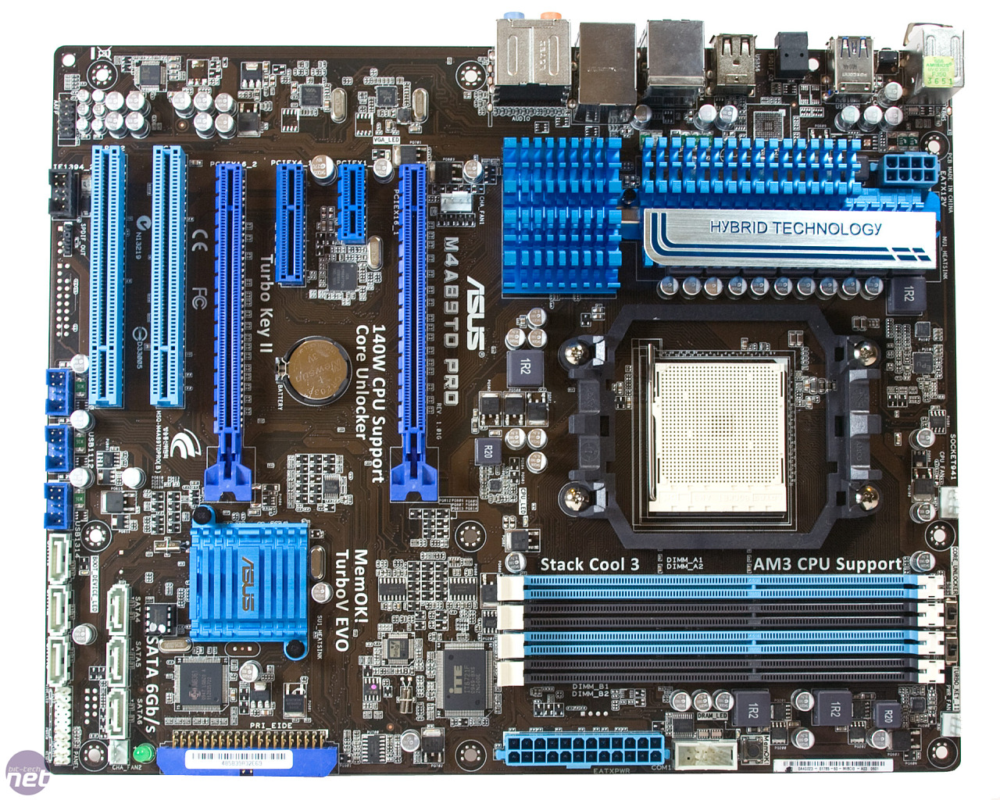
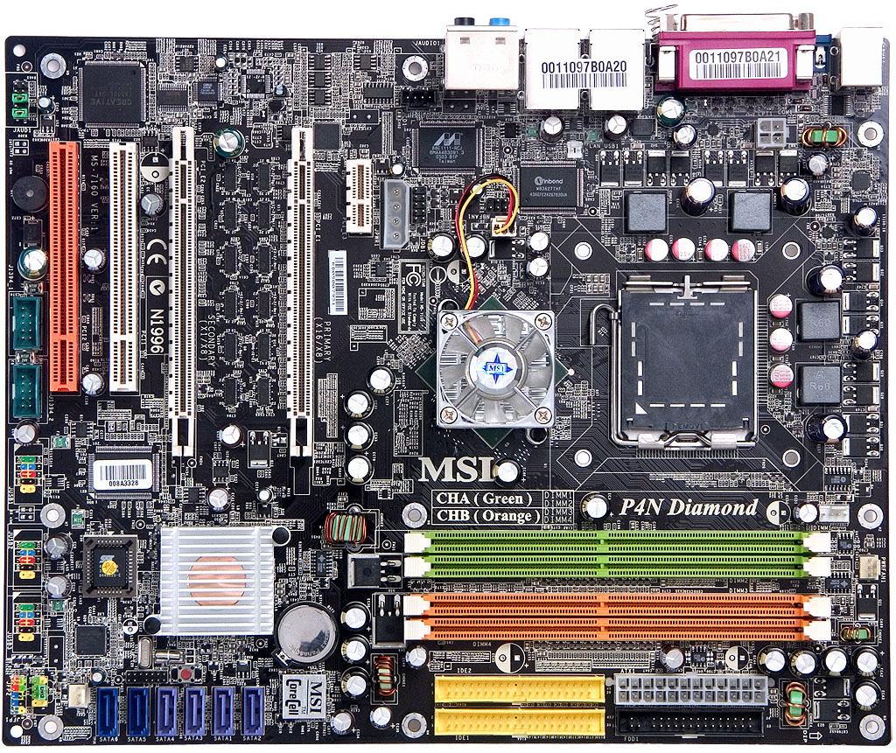
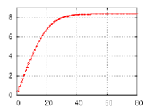

Ingeniería de Servidores - Preguntas Tipo Test
- Autor: Arturo Olivares Martos
- Autor: Jesús Muñoz Velasco
- Autor: Laura Mandow Fuentes
- Autor: Joaquín Avilés de la Fuente
- Autor: Irina Kuzyshyn Basarab
- Autor: Roberto González Lugo
- Descripción: Recopilación de preguntas Tipo Test de la asignatura de Ingeniería de Servidores. Como mínimo, se incluyen las preguntas de los exámenes de Enero y Febrero de cada año desde 2022 hasta 2024. Se han obtenido de fuentes diversas, por lo que si faltasen, sobrasen o estuviesen mal formuladas, por favor, se ruega nos lo hagan saber para corregirlo.
-
Decimos que un servidor es fiable si se encuentra en estado operativo.
-
Podemos aumentar la escalabilidad de un servidor añadiendo fuentes de alimentación redundantes.
-
Los procesadores para servidores suelen tener más canales de memoria que los de PC en la misma generación.
-
Las unidades de estado sólido (SSD) son capaces de alcanzar anchos de banda superiores a los que el protocolo SATA-3 puede proporcionar.
-
El primer procesador con un conjunto de instrucciones de 64 bits lo diseñó AMD a principios de los 2000.
-
La "S" del acrónimo SRAM es por Synchronous.
-
Puedo conectar una tarjeta PCle 2.0 en un conector PCIe 4.0 de la placa base, pero no al revés.
-
PCle 2.0 x4 tiene un ancho de banda de 2GB/s en cada sentido.
-
Puedo conectar un disco SATA usando el controlador SAS de la placa, pero no un disco SAS usando el controlador SATA de la placa.
-
SO-DIMM es un tipo de memoria pensada para servidores.
-
En la jerarquía de memoria de un computador, la memoria LLC tiene menor latencia que la DRAM.
-
El conjunto de instrucciones que ejecutan el auto-test de arranque (Power On self-test) se encuentran almacenadas en la ROM/Flash BIOS de la placa.
-
Para diagnosticar que una memoria RAM funciona correctamente debemos utilizar un benchmark específico para memorias RAM.
-
Si
NT >> NT*el servidor dejará de estar en equilibrio de flujo (para el caso de redes de colas cerradas). -
La sección de garantías de un pliego de prescripciones se refiere esencialmente a la garantía en la realización del pago del contrato.
-
En un anuncio de licitación pública se debe aportar tanto los códigos CPV como la dirección de internet en la que estará disponible el pliego de condiciones.
-
Un módulo de DRAM DDR4 con ECC 2Rx4 tiene 36 chips.
-
Las tarjetas que usaban las ranuras ISA tenían que ser pre-configuradas para asignarles la interrupción que correspondía a cada una.
-
Podemos mejorar la escalabilidad de un servidor utilizando RAID 1.
-
Si una interfaz es Plug and Play podemos cambiar el componente en caliente (sin reiniciar).
-
Un SSD con MLC es menos fiable que uno SLC.
-
Un disco SAS usa un único conector que unifica tanto los cables de alimentación procedentes de la fuente de alimentación como los de datos, procedentes de la placa base.
-
Los chips de la serie AMD Opteron X son SoC.
-
AGP tiene más ancho de banda que PCI.
-
Con la Ley de Amdahl podemos estimar la ganancia en velocidad de la ejecución un único trabajo (un hilo) en un computador después de mejorar \(k\) veces un componente.
-
Las prestaciones de un servidor no se ven afectadas por la configuración de la memoria virtual.
-
La ganancia en velocidad siempre es un número comprendido entre 0 y 2, ambos inclusive.
-
El protocolo USB 2.0 es half-duplex.
-
El puente sur del chipset es el encargado de las transferencias entre el puente norte y el resto de periféricos con menores exigencias de velocidad de la placa.
-
En un test t, el \(p-value\) equivale esencialmente a la probabilidad de que la hipótesis nula sea falsa.
-
La hipótesis de partida de un test
ANOVAes que el factor que se está estudiando influye en el rendimiento. -
Con "sar -u", sin más argumentos, iremos obteniendo la información de la utilización global del procesador desde el momento actual en adelante.
-
Un microbenchmark también suele denominarse benchmark de sistema completo.
-
Una ganancia (speedup) negativa quiere decir que la mejora aplicada ha empeorado el tiempo original.
-
EPYC es una familia de procesadores de AMD para servidores.
-
eDonkey es un ejemplo de Arquitectura Cliente/Servidor de varios niveles.
-
El zócalo para CPU de la figura es de tipo LGA.

-
AHCI es una interfaz diseñada para facilitar la conexión de SSD a través de PCIe.
-
En una placa base de un PC es habitual encontrar tanto conectores SATA como SAS.
-
La transmisión de información entre un módulo de memoria de tipo DDR4 y la CPU es half-duplex.
-
El módulo regulador de voltaje, entre otras cosas, convierte la corriente alterna en corriente continua.
-
SATA-3 usa codificación 128b/130b.
-
La precisión de un sensor se refiere esencialmente a cómo se aproximan las medidas que toma al valor verdadero.
-
Todos los protocolos de comunicación serie son full-duplex.
-
La utilidad principal de las unidades de cinta en servidores es para almacenamiento de respaldo (backup) y archivado.
-
PCIe permite la conexión serie punto a punto, una comunicación de tipo full-duplex y la conexión de dispositivos en caliente.
-
En un pliego de prescripciones técnicas no se debe hacer referencia a una fabricación o una procedencia determinada con la finalidad de favorecer o descartar ciertas empresas o ciertos productos. Si no es posible, se acompañará la mención «o equivalente».
-
En un test
ANOVA, siF_{exp}es mayor que el grado de significatividad concluiremos que no podemos decir que el factor a considerar influya en la variable respuesta. -
gprofbasa su información en lo que obtiene leyendo de/proc. -
El contratante es el licitador que resulta adjudicatario de la licitación y quien finalmente se encargará de llevar a cabo los trabajos contratados.
-
Los procesadores Intel Core i7 están especialmente diseñados para placas con dos o más zócalos de CPU.
-
Una memoria DRAM necesita refresco porque es volátil.
-
Si \(\sum\limits_{i=1}^{K} U_i > 1\) el servidor está saturado.
-
El conector de la figura proviene de una fuente de alimentación.

-
El índice SPEC premia mejoras sustanciales con respecto a algún programa del benchmark y no castiga al mismo nivel los empeoramientos.
-
La razón media de visita de un dispositivo no tiene por qué ser necesariamente un número entero no negativo.
Nota: números enteros no negativos son: \(0, 1, 2, 3, \dots\) -
En la monitorización de un servidor durante un tiempo \(T\), \(C_0\) no puede ser mayor que \(A_0\).
-
\(R_i=W_i+Q_i\), para todo \(i=1..K\)
-
La versión serie del interfaz SCSI se llama SAS, cuyas siglas provienen de "Serial Attached SCSI".
-
Una red de colas abierta se puede considerar un caso particular de red de colas cerrada si hacemos que \(Z = 0s\).
-
El pliego de condiciones se divide en "pliego de cláusulas administrativas particulares" y "pliego de prescripciones técnicas".
-
AMD ofrece los procesadores EPYC para el mercado de sobremesa y los OPTERON para el de servidores.
-
La cola/pasta térmica es un aislante que evita que el calor salga de la CPU.
-
Las LR-DIMM se utilizan para caché de altas prestaciones en servidores.
-
Es el propio microprocesador en muchos computadores actuales el que realiza la función de puente norte del chipset.
-
El fenómeno llamado "timing skew" motivó la aparición de protocolos de comunicación paralelos como P-ATA (también llamado IDE) o PCI.
-
Existen servidores con fuentes de alimentación reemplazables en caliente (hot swappable).
-
Los conectores de la placa base de la figura podrían ser de tipo SATA.

-
Un servidor que siempre me da respuesta, pero que a veces me da respuestas incorrectas, tiene una disponibilidad del 100%.
-
Con “sar -P 1” puedo conocer el estado del proceso con id=1.
-
Cuando nos referimos al método USE para la monitorización del rendimiento de un servidor, la “S” de USE viene de “Saturation”.
-
Un zócalo PGA tiene agujeritos para que entren las palillas del procesador.
-
Una celda SRAM tiene más componentes electrónicos (condensadores, transistores...) que una DRAM.
-
Un microprocesador puede acceder a la vez a dos módulos de memoria del banco de un mismo canal.
-
PCle 5.0 usa codificación 8b/10b.
-
No solo se puede conectar una tarjeta PCIe 2.0 en una ranura PCIe 5.0 de la placa base, sino que también se puede conectar una tarjeta PCIe 5.0 en una ranura PCle 2.0 de la placa base.
-
A través del System Panel (o Front Panel) se puede conectar un dispositivo USB del chasis a la placa base.
-
Las placas de servidores suelen tener un conector VGA en el panel trasero.
-
\(N_0 = \sum\limits_{i=1}^K V_i \times N_i \)
-
Los pliegos de prescripciones técnicas en ningún caso contendrán declaraciones o cláusulas que deban figurar en el pliego de cláusulas administrativas particulares.
-
A la hora de escoger un servidor ateniéndonos únicamente al valor de la relación prestaciones/coste, es mejor escoger la versión con un valor numérico mayor.
-
Decimos que un módulo de DRAM tiene dos rangos si tiene chips por las dos caras (dualranked).
-
NCQ (Native Command Queuing) es una extensión de SATA concebida especialmente para optimizar el acceso a unidades de estado sólido.
-
Una de las líneas del protocolo PCIe se usa en exclusiva para transmitir la señal de reloj.
-
El puente sur del chipset se encarga de las líneas de PCIe x16.
-
La precisión de un sensor está relacionada con la dispersión de las medidas que realiza.
-
El indice SPEC no tiene unidades.
-
El pliego de prescripciones técnicas debe contener, con carácter general, la información sobre el plazo de ejecución o duración del contrato.
-
Puedo colocar una PCIe x16 en una x4 pero no al revés.
-
MTTF significa Mean Time To Failure.
-
PCI soporta Hot Plugging.
-
Ultra-SCSI no soporta Full-Duplex.
-
La ROM tiene el código para instalar los drivers que se usarán por el SO para funcionar normalmente.
-
Un servidor blade es más complejo que un rack.
-
Los procesadores Opteron son los procesadores de Intel para servidores.
-
El puente norte del chipset es el que se encarga de las transferencias de alta velocidad.
-
Llamamos "rango" a cada una de las caras de un módulo de memoria RAM.
-
La anchura de entrada de un monitor es la frecuencia máxima de la ocurrencia de los eventos.
-
En
gprofla columnaselfde cada función incluye el tiempo de código propio (incluyendo el tiempo que tardan sus hijos en ejecutarse). -
gprofda información exacta (no estimada) del tiempo de ejecución de cada función de un programa instrumentado por esta herramienta. -
Un monitor por eventos siempre da información exacta.
-
Medir los
MIPSes un buen índice de rendimiento. -
En un call graph, las flechas indican el número de veces que una función llama a otra. Este número siempre es entero.
-
SPECrate, a diferencia de SPECspeed, mide cuántos programas se ejecutan por unidad de tiempo.
-
Si lanzo dos dados (sin truncar) muchas veces, la media de la diferencia entre los valores de sus lanzamientos debería tender a 0.
-
El tiempo de respuesta medio de un servidor es la suma de los tiempos de respuesta de las estaciones de servicio.
-
Si añado una nueva CPU a nuestro servidor, el tiempo mínimo medio de respuesta del servidor seguro que disminuye.
-
Las principales medidas de prestaciones de un servidor se basan en tiempos de respuesta (o latencias) y en productividades (o anchos de banda).
-
Todos los sistemas escalables son extensibles, pero no a la inversa.
-
Xeon es una familia de microprocesadores de IBM especialmente dirigida a los servidores.
-
El voltaje que usa un módulo DDR4 es menor que el de un módulo DDR3.
-
Las latencias de las unidades de cinta suelen ser muy bajas ya que hay que rebobinar la cinta hasta que el cabezal se encuentre en la posición deseada.
-
SAS es full-duplex.
-
En el panel trasero de la placa base de un servidor es habitual encontrar varios conectores para Ethernet.
-
A través del "System Panel" se puede conectar el altavoz del chasis a la placa base.
-
La pila que hay en la placa base sirve, entre otras cosas, para tener el reloj en tiempo real de dicha placa actualizado.
-
SSD procede de las siglas "Solid State Disk":
-
La placa base de la figura tiene una ranura PCI y 4 PCIe:

-
La placa base de la figura tiene al menos dos conectores mini-SAS:
-
La placa base de la figura admite hasta dos microprocesadores y un máximo de cuatro DIMM de memoria RAM dinámica en total.:
-
El puente sur del chipset se encarga de la comunicación con la DRAM
- En saturación, el cuello de botella está al máximo de su productividad.
- La demanda media de servicio de un dispositivo en el seno de un servidor nunca puede ser menor que su tiempo medio de servicio.
- \(\sum\limits_{i=1}^k R_i = R_0\)
- Si ejecutamos la línea
sar -den un servidor consarinstalado, iremos obteniendo información sobre las transferencias de cada disco del servidor de forma interactiva. - \(C_0\) es un valor medio calculado durante el periodo de monitorización \(T\)
- Un módulo de DRAM con chips en ambas caras no tiene por qué ser de doble rango (dual ranked).
- Tanto las SRAM como las DRAM son volátiles, pero solo las DRAM necesitan refresco.
- Los protocolos de comunicación serie pueden ser half-duplex.
- Con "almacenamiento permanente" queremos indicar que el dispositivo es de solo lectura y que el dato se va a quedar escrito en el dispositivo de forma permanente.
- Con un conector SATA de la placa base puedo conectar 4 discos mini SAS.
- Jugando con las distintas configuraciones de un RAID se puede conseguir más fiabilidad o más disponibilidad, pero no mayores prestaciones.
sares un monitor software por eventos.- Con "carga del sistema", el S.O. Linux se refiere al número de procesos en modo running, runnable o I/0 blocked.
- La hipótesis inicial de un test t es que los rendimientos de ambas alternativas a analizar son estadísticamente diferentes.
- Cuando nos referimos al índice de prestaciones que se calcula según el benchmark SPEC CPU2017, el SPEC pico (peak) nunca puede ser menor que el SPEC base.
- En los benchmarks TPC-C y TPC-H, el índice de prestaciones se calcula a partir de la media geométrica de las ganancias en velocidad con respecto a una máquina de referencia.
- Actuando sobre el elemento con mayor razón de visita nos garantizamos mejorar la productividad máxima de un servidor.
- En un servidor, si la demanda de servicio de un dispositivo es menor que la de otro, su utilización nunca podrá ser mayor que la de ese otro dispositivo.
- En un servidor modelado mediante una red de colas se cumple que \(B_i = (N_i-Q_i) \cdot T\).
- Si el número total de usuarios en un servidor modelado mediante una red de colas cerrada interactiva es superior a
NT*, entonces el servidor está saturado. - La memoria técnica que presenta cada licitador no podrá hacer referencia a una fabricación o una procedencia determinada con la finalidad de favorecer o descartar ciertas empresas o ciertos productos. Si no es posible, se acompañará la mención «o equivalente».
- Un mismo servidor, según su tipo de carga puede tener distintos cuellos de botella.
- \(R_0 = V_1 \cdot R_1 \cdot V_2 \cdot R_2\)
- La versión serie de SCSI se llama M2, también conocida como NGFF.
- Si reemplazamos un dispositivo por otro el doble de rápido, su razón de visita será menor.
- Si aplicamos la ley de Little a cada cola de una estación de servicio obtenemos que: \(V_i = X_i \cdot S_i\)
- Una máquina con un SPEC menor de 1 significa que es más rápida que la máquina de referencia.
- Uno de los inconvenientes de utilizar la media aritmética de los tiempos de ejecución de los benchmark es que su valor dependerá de la máquina de referencia que se escoja.
- En el servidor modelado mediante una red abierta la tasa de llegada no puede superar \(\frac{1}{D_b}\)
- Si
NT >> NT*el servidor está saturado (para colas cerradas). - En un test t, el \(p-value\) obtenido depende del nivel de confianza seleccionado.
- En un test t, a mayor nivel de confianza es más fácil rechazar la hipótesis de que ambas alternativas son iguales.
- Al bajar el grado de significatividad, es más difícil conseguir que el \(p-value\) < alfa.
- En Linux, la información a la que se accede a través de
/procestá almacenada realmente en la RAM. - Si un servidor siempre responde a nuestras peticiones podemos decir que es un servidor de alta fiabilidad.
- \(N_0 = \sum\limits_{i=1}^n N_i\)
- La expresión \(Q_i = \lambda_i\cdot W_i \) es válida, aunque el servidor esté saturado.
- Las unidades SSD tienen mayor latencia que los discos duros debido a que no tienen que esperar a que el cabezal se posicione sobre la pista a leer/escribir.
- Bajo ningún concepto se puede hacer referencia a una fabricación o una procedencia determinada cuando se especifican los componentes a instalar o suministrar en un pliego de prescripciones técnicas.
- Las pistas en una placa base están normalmente hechas de cobre rodeadas de láminas de un substrato no conductor.
- El número medio de trabajos en un servidor es la suma de los números medios de trabajos en cada uno de sus componentes.
- Los códigos CPV deben figurar obligatoriamente en todos los pliegos de prescripciones técnicas.
- En los paneles traseros de las placas de servidores los conectores de red son de bajas prestaciones.
- La productividad de un servidor nunca podrá ser superior a \(\frac{1}{D_b}\).
- Intel Xeon es la familia de microprocesadores de Intel especializada en servidores.
- Los procesadores AMD Opteron Serie A están basados en microprocesadores de ARM.
- \(\lambda_i = \frac{Q_i}{W_i}\)
- \(S_i = \frac{C_i}{B_i}\)
- Es la media aritmética y no el índice SPEC el que nos ayuda a saber qué computadora ejecuta el conjunto total de programas de un benchmark en menos tiempo.
saral igual quetopes un monitor software por eventos.- Las pistas de una placa base están hechas de una resina no conductora y no inflamable.
- Frotándose las manos se elimina la electricidad estática.
- La memoria caché L3 se comparte por todos los cores de un microprocesador.
- Conforme aumenta la generación de memorias DDR aumenta el ancho de banda y disminuye el voltaje.
- Los VGA de un servidor son de altas prestaciones.
- El conjunto de instrucciones POST se encuentra en la RAM.
- Una fuente de alimentación convierte corriente continua en corriente alterna para usarla en la placa base.
- \(Z=N_z\cdot R_0\)
- La carga de un sistema se puede definir como el conjunto de tareas que ha de realizar.
- La interfaz Serial ATA es compatible con SAS. Dicho de otra manera, si tengo una placa con conectores Serial ATA voy a poder pinchar en ella unidades SAS.
- La expresión \(N_i=X_i\cdot R_i\) solo es válida si el servidor está saturado.
- La placa base de la figura admite un único microprocesador y 4 módulos de memoria DRAM.
 - La placa base de la figura tiene 4 ranuras PCIe y 6 conectores SATA.
- Los paneles traseros de placas de servidores suelen tener conectores de audio y video de altas prestaciones.
- Un microprocesador puede acceder simultáneamente a 2 módulos de memoria DRAM solo si están en canales diferentes.
- Tanto PCI como PCIe definen un protocolo de comunicación serie punto a punto.
- La expresión \(N_0 = X_0 \cdot R_0\) solo es válida si el servidor no está saturado.
- La expresión \(U_i = X_i \cdot S_i\) solo es válida si el servidor no está saturado.
- El resultado de un benchmark siempre se expresa como el tiempo necesario para ejecutar una cantidad pre-establecida de tareas.
-
El contratante es el proponente que resulta adjudicatario de una licitación y quien finalmente se encargara de llevar a cabo los trabajos contratados.
-
Time skew es un protocolo de comunicación paralelo.
-
Si el servidor A es el doble de rápido que el servidor B para todos los programas de un benchmark cuyo rendimiento se calcula según el criterio SPEC, entonces ese índice SPEC del servidor A será mayor que el del servidor B, independientemente de la máquina de referencia elegida.
-
El conjunto de instrucciones que ejecutan el auto-test de arranque (Power On self-test) se encuentran almacenadas en las primeras direcciones de la DRAM.
-
Si aplicamos la ley de Little a los usuarios en reflexión de una red de colas cerrada Interactiva, podemos relacionar el número medio de usuarios en reflexión con la productividad media del servidor y el tiempo medio de reflexión de dichos usuarios.
-
Si un servidor web ha recibido una media de 10 visitas por segundo, entonces la razón media de visita del servidor es 10 tr/s.
-
Si añadimos una segunda CPU a nuestro servidor, idéntica a la ya existente, es razonable suponer que la razón media de visita de la primera CPU se va a dividir por dos.
-
\(W_i = N_i \cdot S_i\) es una ley válida para servidores modelados mediante una red de colas abierta en equilibrio de flujo.
-
Si el servidor A es un \(50\%\) más rápido que el servidor B en ejecutar un determinado programa de benchmark, entonces podemos decir igualmente que el servidor B es un \(50\%\) más lento que el servidor A en ejecutar dicho programa de benchmark.
-
Las memorias con ECC se usan para aumentar la disponibilidad de un servidor.
-
La frecuencia de reloj de las CPU sigue todavía incrementándose de forma exponencial con los años.
-
La placa base de la figura tiene 2 ranuras PCI, 3 PCIe y 6 conectores SATA.
 -
La placa base de la figura solo admite una CPU y 4 DIMM de memoria RAM dinámica.
-
La transmisión de información entre un módulo de memoria de tipo DDR4 y la CPU es full-duplex.
-
El uso de Cloud Computing y de la virtualización facilita el diseño de servidores escalables.
-
Si la ganancia en velocidad (speedup o aceleración) entre dos servidores para un determinado programa es mayor que 0, es razonable concluir que uno de los servidores es más rápido que el otro para ese programa.
-
Con un benchmark especializado en DRAM puedo diagnosticar el correcto funcionamiento de un módulo de DRAM.
-
En una red de colas cerrada interactiva se cumple que: \(N_T = X_0^{max} \cdot (R_0^{min} + Z)\)
-
La siguiente figura puede corresponder a la evolución de la productividad media de un servidor modelado mediante una red de colas cerrada frente al número total de usuarios en dicha red.
 -
Las memorias de tipo U-DIMM, al carecer de buffer/registro interno, son las que permiten albergar la mayor cantidad de memoria por módulo.
-
En una red abierta en equilibrio de flujo se cumple que \(R_0 = R_1 + R_2 + \dots + R_K\), siendo \(K\) el número de estaciones de servicio de nuestro modelo.
-
En Linux, el profiler
gprofutiliza monitorización por muestreo para estimar el tiempo de CPU que consume cada función de nuestro programa escrito en C. -
Cuando comparamos tiempos de ejecución, expresados en segundos, de programas ejecutados en servidores utilizando el test t, el estadístico \(t_{exp}\) también se puede expresar en segundos.
-
Es posible conectar unidades de almacenamiento con interfaz SATA a una placa base con conectores SAS.
-
La celda básica de una SRAM es mayor que la de una DRAM.
-
La familia AMD Opteron X Series usa microprocesadores de ARM.